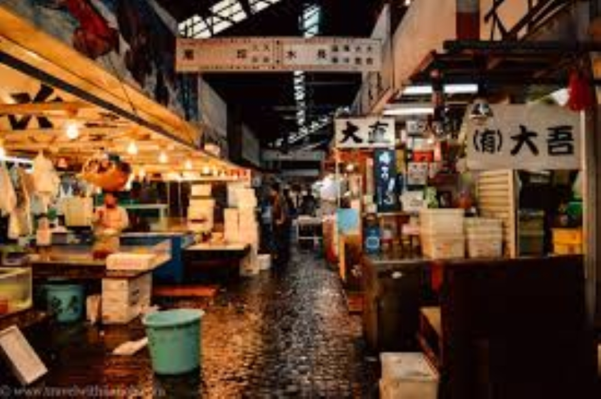

Photo gallery
Senso-ji
Cherry Blossoms

Tsukiji Market
Mount Fuji View
Where ancient shrines stand in the shadow of neon towers. A city that never sleeps, never repeats itself.
Tokyo's oldest temple in Asakusa. Visit at dawn to see it draped in mist and silence.
An orange iron icon glowing against the night sky. Best seen from Shiba Park below.
Narrow lantern-lit lanes packed with tiny ramen shops serving bowls of liquid perfection.
A sea of cherry blossoms every spring. The whole city gathers here under pink canopies.
The electric town — anime, manga, retro games, and blinking arcades stacked six floors high.
The heart of old Tokyo. Stone moats, ancient walls, and the silence of centuries past.

Tsukiji Market